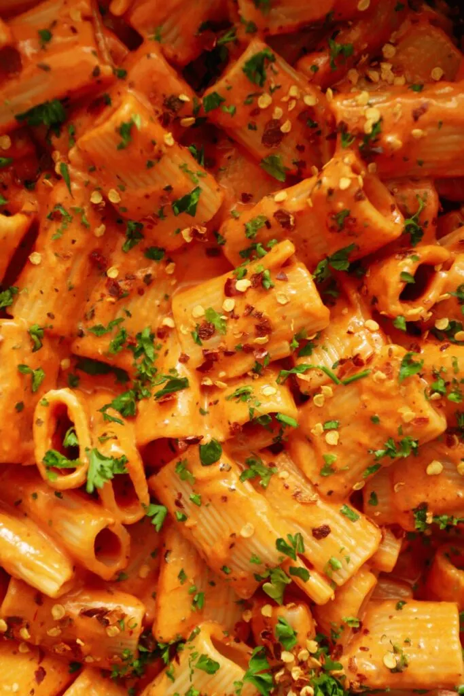

Gigi Hadid Pasta
Home

Description
The Gigi Hadid Pasta is nothing new, in fact it originated in Italy and is more commonly known as Spicy Vodka Pasta. It’s a creamy tomato-based sauce that starts off with cooking down some onions and garlic. Then tomato paste is caramelized in olive oil and heavy cream is added to turn it into a beautifully smooth sauce. And if that didn’t sound good enough, the final touches are butter, tons of freshly grated parmesan, and some pasta water. Red pepper flakes spice it up while the basil brings a fresh herbal touch to the whole dish. It’s truly perfection and my new favorite pasta dish to make.
Ingredients
- Olive oil
- Tomato paste
- Heavy cream
- Parmesan
- Basil
- Garlic
Steps
- Bring a large pot of salted water to a boil. Throw in the pasta and cook according to package directions. Reserve at least 1 cup of pasta water and then drain.
- In a saucepan, add the olive oil over medium heat. Add the garlic and tomato paste and cook for about 4 to 5 minutes. The tomato paste will darken in color from a bright red to reddish brown. This process removes acidity from the tomato paste.
- Add heavy cream and mix until incorporated. Simmer for about 2 to 3 minutes.
- Add the grated parmesan, butter, and 1/2 a cup pasta water. Mix until the sauce is smooth and creamy. If you think it needs more pasta water, you can add but 1/2 a cup is perfect for me.
- Toss in the cooked pasta and mix to coat evenly. Optional, top it off with more grated parm, chopped parsley, and chili flakes.